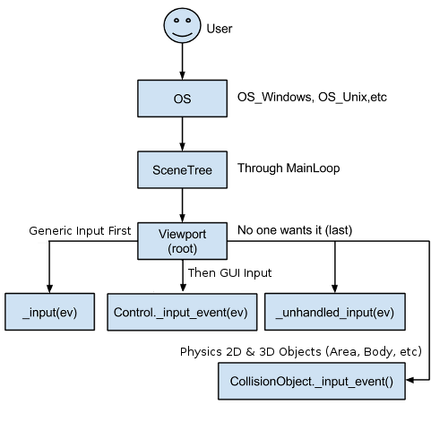

Saying G'day to Godot
I’ve taken my first steps to developing a game on the Godot 3 game engine.
Background
Following a thorough selection process outlined in my last post I selected Godot 3 as the game engine I would build a game with. The game is a top down 2D shooter, and much of the design had been created previously as I was developing it on an engine I was building myself at the same time. Things didn’t work out with the OS I was targeting, and I’m now planning to build it with Godot 3 for mobile and tablet devices on the Android and (probably) iOS platforms. Check out my previous posts which cover the journey so far in more detail.
What to Build First?
Given I’m effectively back where I was when I started on my own engine, it makes sense to rebuild the same capability tests I had to ensure Godot was able to accommodate the game features I have in mind. As well as helping me to learn Godot, it’s also an opportunity to compare the performance of Godot over my own engine by implementing the same tests. I expect to find Godot performs much faster than my own engine as it’s much closer to the metal than I was working previously, but it will be great to see this in practice.
I chose to port my touch manipulation capability test first. Touch input is the area I have the most concern with in Godot, and my test should be relatively simple to port. My game uses touch and gestures for controls, and the touch manipulation capability test allows me to explore the touch features in Godot.
The test is simple; three coloured boxes that can me moved by a drag gesture, scaled by pinch and zoom, and rotated with a twist of two or more touch points. The boxes are selectable, so once selected you don’t have to be touching the object to continue manipulating it.
Here’s a video of the completed test on my former engine (running on Windows Phone) to show how this works:
Touch manipulation capability test on my former engine
Coding with Godot
With Godot there are several language choices, including C# (which I have most of my experience in). However I chose to start with Godot’s own scripting language; GDScript. This language was developed specifically for Godot by their core development team and I felt it would be much easier for Godot to convert my intentions into native code on my choice of target platforms if I used it. Besides, new Godot features would probably appear in GDScript first and I’d prefer they be available for me if I need them.
There was also the opportunity to use external editors for coding. My favourite code editor is VS Code and it already had multiple extensions for working with GDScript. After running with both the Godot editor and VS Code for a while, I found the convenience of working inside the Godot editor far outweighed the features the editor lacks (touch scrolling the code window and multi-line editing for example) and I went all in with the built in editor.
When creating objects in Godot you define a “scene” which is a composition of a hierarchy of “nodes”, each with it’s own purpose. It took me a while to find the right nodes to use for this test, and after a while I realised I was implementing my objects at the wrong level. I was misled by the word “scene” and thought it was synonymous with “view”, and while you probably can work this way it’s not how Godot is designed to work. A scene is more synonymous with “class” or “entity”, and a view is just a scene that composes multiple other scenes together.
Nodes are like characteristics or behaviours of the scene and it’s the combination of composing nodes into a scene that defines the object. Nodes can contain any number of other nodes, and nodes can be instances of scenes. This allows the kind of encapsulation and inheritance heirarchies you would expect from an object oriented language, so all the OO coding patterns and techniques still apply.
It was relatively easy to become familiar with the way scenes and nodes work together to form larger pieces, and I quickly became confident with dealing with problems as they arose. Of course, I still needed to familiarise myself with what all the built in nodes were for, so I continued to watch youTube tutorials to see how other people solved the problems I would be coming across as I build out my game.
Input with Godot
Godot has a comprehensive input event system where input events are propagated through all nodes in a scene on every cycle of the game loop. Various events on nodes are fired until the event is marked as handled or passes all the way through, allowing several ways to accommodate different input processing methods. As well as raw input information, a built in input map system allows you define maps from various input devices (keyboards, joysticks, mice, console controllers, etc). Input maps abstract the controller away from the event handlers and simplifies your code.
Godot’s documentation; as comprehensive as the InputEvent itself
In my capability test, touch input was my focus. While simple touch gestures allow “click” and “double-click” control out of the box, more complex manipulations need to be constructed from raw “screen touch” and “screen drag” events. This was in contrast to where my original test was written, as UWP has a built-in manipulations class that supports all sorts of gestures.
While creating custom gesture handling can be frustrating, it can also be beneficial. Even though I lost some time developing the gestures I needed, I know I’m not having to employ a bloated built in node containing gestures I don’t need. Further, as more and more people adopt touch devices and Godot 3, there’s opportunity to share community-built solutions such as this to speed up the development process for everyone.
It’s worth mentioning that while I did search for and find some pre-existing touch handling code for Godot, it wasn’t in a format I preferred and I wasn’t sure if it was performant. I decided to use writing my own handler as a step to learning to code in Godot and use existing material for reference to help solve my problem.
Manipulations in Godot
In the previous version of my capability test on UWP I found the delta events of manipulations worked very well when consuming the events. Delta translation, rotation, and scale values are easily applied to matrix transforms on objects, so my touchController (as I called it) would definitely expose these events in signals somehow. To get to this point I would need to process the raw InputEventScreenTouch and InputEventScreenDrag events from Godot and apply some logic to convert into my manipulations into signal data.
I started with simple touchStarted and touchStopped signals that would fire whenever a finger started touching and stopped touching the screen. This essentially echoed the Godot InputEventScreenTouch event’s pressed property, but allowed me to start creating a touchInput scene with the controller signals connected up to a debug label for testing.
Selectable Boxes
Next I needed to draw the coloured boxes to be manipulated on the screen. Godot doesn’t have any vector shape nodes that I could find, so I ended up creating a colourBox scene with a custom draw method to draw squares with borders. I draw two squares on top of the other (first with the border colour, then a smaller one with the fill colour) which ensures the border looks crisp and doesn’t antialias/bleed when the box is scaled.
I added some variables for the border and fill colour, and for the size of the box and the width of the border. Then I created a generic function to create instances of the 3 boxes in my scene (red, green, and blue).
Now I wanted to make the boxes selectable. I was expecting the built-in input system would provide a way to determine the top-most object under a point on the screen but it appeared not to be so. After discussing the issue on the Godot Discord and toying with a few approaches it seemed the best approach in my circumstances was to allow the boxes themselves to set some state if they were touched and have a controller in the parent scene determine which shape should be selected if multiple hits were reported.
While this felt a little clunky and over-specified at first, it did lend itself to developing a selectionController that isolated the selection of boxes from the rest of the parent scene to hide most of the clutter. I considered going a step further and creating a behaviour node that would be added to boxes when they are registered with the selectionController to encapsulate the input logic, but I don’t know if I’d ever reuse that code so I’ve left it as is for now.
All that remained is for the selectionController to work out which node is selected by looping through the registered boxes, examining whether they were being touched, and assigning to a variable for use in the main scene.
Translation Manipulation
Now that I had selectable objects it was time to create the manipulations I needed. I went for the easiest one first; the translation.
From my experiment with creating touchStarted and touchStopped signals I knew that each touch point would be assigned it’s own ID (called “index”), and those indexes are created using an increasing integer. When a touch starts I add the index, origin, and position to a dictionary of touch points for tracking. I also record the index of the highest touch point seen, which I use later to form the manipulations loop.
During InputEventScreenDrag events from Godot I update the position of the stored touch points in the tracking dictionary. If the event drag is on the point with the highest index I call a manipulation handler, forming the manipulation loop. When touch stops (the InputEventScreenTouch event with event.pressed equal to false), I remove the point from the tracking dictionary (and update the highest index if required).
1 | func _input(event): |
All that remained was to calculate the delta translation (vector) using the change in position of one or many touch points. For each touch point in the tracking dictionary, the vector from its current position to its position on the previous pass through the manipulation loop are added together. The result is divided by the number of touch points to calculate the average value. This is the translation delta.
1 | func handleManipulation() : |
Once calculated I simply emit a manipulationChanged signal from the controller containing a delta with a translation property containing this translation delta value. In the parent scene I consume this signal by simply adding the delta.translation to the selected node’s position and the “drag” manipulation is complete.
1 | # continuation of `func handleManipulation()` |
Rotation Manipulation
Next I tackled rotation manipulation. The logic for this is different because to create rotation you need (at least) two touch points, and use the angle between them to calculate the delta. If there are more than two touch points, the angle between each neighbouring pair of touch points is added together and averaged. I use another tracking dictionary, keyed by the indexes of the point pair, to compare the change in angle between subsequent passes of the manipulation loop.
1 | # inside `func handleManipulation()` |
This angle delta is inserted into the delta object in the manipulationChanged signal, and consumed by adding the value to the selected node’s rotation property. This completes the implementation of this manipulation.
1 | # inside `func handleManipulation()` |
Scale Manipulation
The final manipulation is often called “pinch and zoom” and in my sample project it is used to scale the size of a box up and down. The logic is a lot like the logic for rotation and shares a lot of the code; it requires (at least) two touch points, and the change in distance between each neighbouring pair is averaged to produce the scale delta. The same tracking dictionary is used to track this distance for each point pair between passes of the manipulation loop.
1 | # inside `func handleManipulation()`; merging scale with angle calculation |
The scale delta value is inserted into the delta object in the manipulationChanged signal. Consuming it is slightly different, as this value is multiplied by the selected node’s scale property to produce the intuitive affect.
1 | # signal |
Manipulations and Inertia
In the original demo I could flick boxes around manipulations whereas in my Godot version I cannot. In UWP, the built in manipulation system had an inertia feature that I chose not to implement in my Godot version. I don’t require this feature for my current game, however if I ever need to add inertia manipulations I think it would be relatively trivial to add the logic to my touchController.
Ship it!
My touch manipulation capability test was now complete. While things worked great running this test on my Surface, I really wanted to see it on mobile (at least on Android). I wanted to ensure that when Godot translated to a different set of binaries the behaviour of the manipulations wouldn’t change.
At the time I was using Godot 3.0 and setting up to deploy to Android was a pretty convoluted and painful. This was mostly due to having to install tooling and configuration outside Godot, as the config inside Godot itself was relatively easy. Since then a lot has happened, with some changes with the way the Google app store treats Godot applications, and decisions about how Godot supports Android exports, and I’m happy to say there appears to be plans to simplify things a lot for Godot 3.1 (or at least in a near-future version).
Once Godot (and my development machine, and my Android phone) were correctly configured, exporting to Android wsa a breeze. When I connect my phone to my Surface, an option appears in Godot to deploy to Android at the press of a button. A few brief moments later and my capability test was running on my Android phone and working in every way it did on my Surface. You beauty!

See all the code on my Github Gist
Final thoughts
While it was initially disappointing that I had to build my own manipulation system in Godot, I’m satisfied with the result. The performance of this capability test, at least measured through my own observation, appears on par or better than the previous version. I’ve deployed a Godot app to an Android device, and everything works the way it should, which was a relief.
I’m happy that things are progressing and I can move on to the next task. Here’s a video showing the new capability test running on Godot.
Touch manipulation capability test on Godot
Saying G'day to Godot